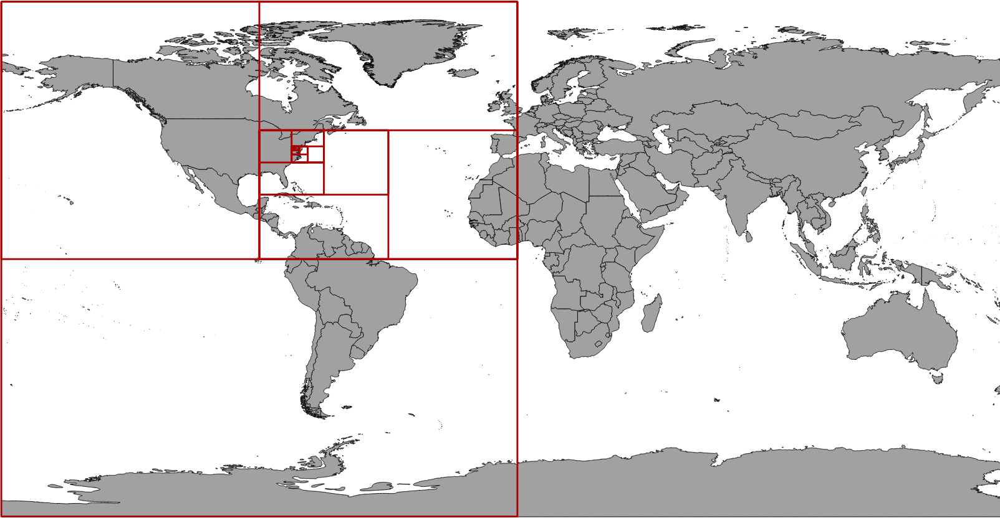

GeoMesa Utils¶
Useful utilities are found in the geomesa-utils module.
Simple Feature Wrapper Generation¶
GeoMesa can be used to generate Scala value classes for simple feature types defined in TypeSafe Config files. Classes will be generated for any feature types found on the classpath. To use with Maven, add the following snippet to your pom, specifying the package you would like the generated class to reside in:
<dependencies>
<dependency>
<groupId>org.locationtech.geomesa</groupId>
<artifactId>geomesa-utils_${scala.binary.version}</artifactId>
</dependency>
</dependencies>
<build>
<plugins>
<plugin>
<groupId>org.codehaus.mojo</groupId>
<artifactId>exec-maven-plugin</artifactId>
<version>3.0.0</version>
<executions>
<execution>
<id>generate-sft-wrappers</id>
<phase>generate-sources</phase>
<goals>
<goal>java</goal>
</goals>
<configuration>
<mainClass>org.locationtech.geomesa.utils.geotools.GenerateRichFeatureModels</mainClass>
<addResourcesToClasspath>true</addResourcesToClasspath>
<cleanupDaemonThreads>false</cleanupDaemonThreads>
<killAfter>-1</killAfter>
<arguments>
<argument>${project.basedir}</argument>
<argument>com.example.geomesa</argument>
</arguments>
</configuration>
</execution>
</executions>
</plugin>
</plugins>
</build>
Geohash¶
Geohashes are a geocoding system that uses a Z-order curve to hierarchically subdivide the latitude/longitude grid into progressively smaller bins. The length of a Geohash in bits indicates its precision.
For example, the table below shows Geohash bounding boxes around the point (-78.48, 38.03) with increasing levels of precision in units of bits (the coordinates are rounded to three decimal places for clarity):
bits |
bounding box |
centroid |
geohash |
|---|---|---|---|
1 |
-180.000 -90.000, 0.000 90.000 |
-90.000 0.000 |
0 |
2 |
-180.000 0.000, 0.000 90.000 |
-90.000 45.000 |
01 |
3 |
-90.000 0.000, 0.000 90.000 |
-45.000 45.000 |
011 |
4 |
-90.000 0.000, 0.000 45.000 |
-45.000 22.500 |
0110 |
5 |
-90.000 0.000, -45.000 45.000 |
-67.500 22.500 |
01100 |
6 |
-90.000 22.500, -45.000 45.000 |
-67.500 33.750 |
011001 |
7 |
-90.000 22.500, -67.500 45.000 |
-78.750 33.750 |
0110010 |
8 |
-90.000 33.750, -67.500 45.000 |
-78.750 39.375 |
01100101 |
9 |
-78.750 33.750, -67.500 45.000 |
-73.125 39.375 |
011001011 |
10 |
-78.750 33.750, -67.500 39.375 |
-73.125 36.563 |
0110010110 |
11 |
-78.750 33.750, -73.125 39.375 |
-75.938 36.563 |
01100101100 |
12 |
-78.750 36.563, -73.125 39.375 |
-75.938 37.969 |
011001011001 |
13 |
-78.750 36.563, -75.938 39.375 |
-77.344 37.969 |
0110010110010 |
14 |
-78.750 37.969, -75.938 39.375 |
-77.344 38.672 |
01100101100101 |
15 |
-78.750 37.969, -77.344 39.375 |
-78.047 38.672 |
011001011001010 |
16 |
-78.750 37.969, -77.344 38.672 |
-78.047 38.320 |
0110010110010100 |
17 |
-78.750 37.969, -78.047 38.672 |
-78.398 38.320 |
01100101100101000 |
18 |
-78.750 37.969, -78.047 38.320 |
-78.398 38.145 |
011001011001010000 |
19 |
-78.750 37.969, -78.398 38.320 |
-78.574 38.145 |
0110010110010100000 |
20 |
-78.750 37.969, -78.398 38.145 |
-78.574 38.057 |
01100101100101000000 |
21 |
-78.574 37.969, -78.398 38.145 |
-78.486 38.057 |
011001011001010000001 |
22 |
-78.574 37.969, -78.398 38.057 |
-78.486 38.013 |
0110010110010100000010 |
23 |
-78.486 37.969, -78.398 38.057 |
-78.442 38.013 |
01100101100101000000101 |
24 |
-78.486 38.013, -78.398 38.057 |
-78.442 38.035 |
011001011001010000001011 |
25 |
-78.486 38.013, -78.442 38.057 |
-78.464 38.035 |
0110010110010100000010110 |
The bounding boxes corresponding to the Geohashes in the table above are shown as red polygons on this map:
The org.locationtech.geomesa.utils.geohash.GeoHash class provides tools for working
with Geohashes. The data for the table above may be generated with the following Scala code:
import org.locationtech.geomesa.utils.geohash.GeoHash
for (p <- 1 to 25) {
val gh = GeoHash(-78.48, 38.03, p)
println(s"""$p ${gh.bbox.toText} ${gh.getPoint.toText} ${gh.toBinaryString}""")
}
Base-32 Encoding¶
Geohashes are encoded as strings with the following base-32 representation:
dec |
binary |
base-32 |
dec |
binary |
base-32 |
|---|---|---|---|---|---|
0 |
00000 |
0 |
16 |
10000 |
h |
1 |
00001 |
1 |
17 |
10001 |
j |
2 |
00010 |
2 |
18 |
10010 |
k |
3 |
00011 |
3 |
19 |
10011 |
m |
4 |
00100 |
4 |
20 |
10100 |
n |
5 |
00101 |
5 |
21 |
10101 |
p |
6 |
00110 |
6 |
22 |
10110 |
q |
7 |
00111 |
7 |
23 |
10111 |
r |
8 |
01000 |
8 |
24 |
11000 |
s |
9 |
01001 |
9 |
25 |
11001 |
t |
10 |
01010 |
b |
26 |
11010 |
u |
11 |
01011 |
c |
27 |
11011 |
v |
12 |
01100 |
d |
28 |
11100 |
w |
13 |
01101 |
e |
29 |
11101 |
x |
14 |
01110 |
f |
30 |
11110 |
y |
15 |
01111 |
g |
31 |
11111 |
z |
By this convention, the 25-bit Geohash that contains (-78.48, 38.03) described above would be encoded as “dqb0q”:
01100 10110 01010 00000 10110
----- ----- ----- ----- -----
d q b 0 q